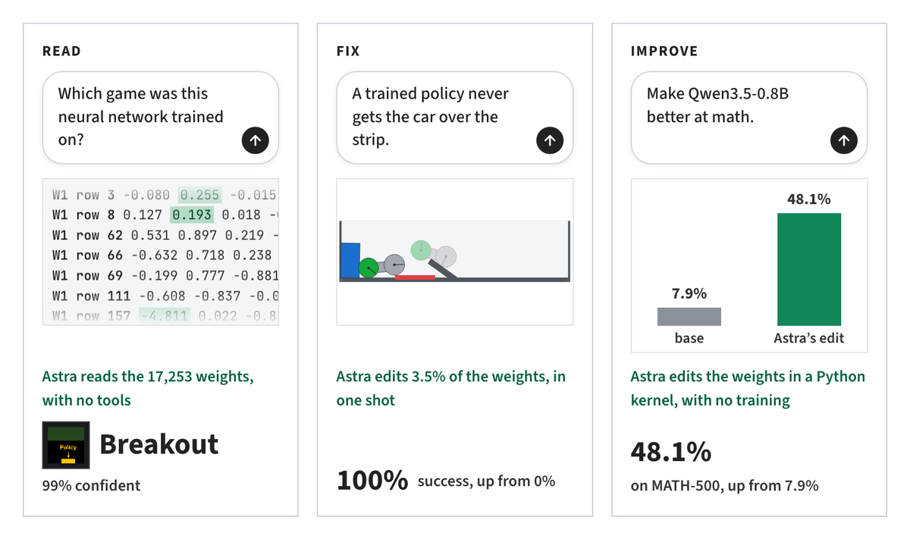
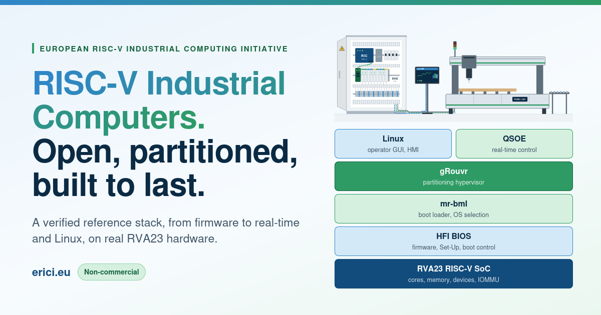
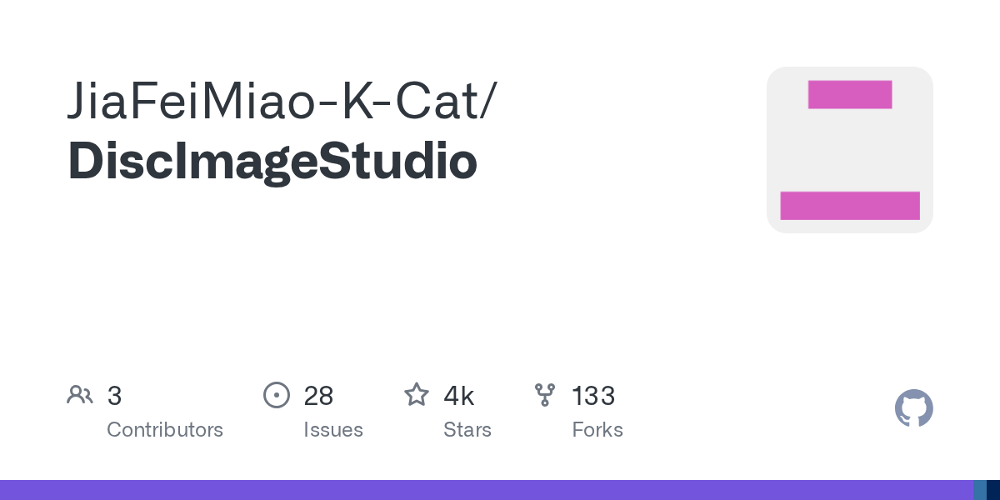

CAMBRIDGE, MASS. — Four authors at MIT CSAIL — Rikiya Takehi, Jayden Teoh, Alex Zhang and Omar Khattab, publishing November 2 — report that a frontier LLM can read and write neural-network weights natively, without an optimizer in the loop. Asked which game a PPO-trained policy was trained on, with all four networks sharing identical dimensions, Astra named the right game four times out of four from the raw weights alone. Asked to write game-playing networks from scratch, it produced MinAtar players that beat networks trained with PPO for 100 million steps. And asked to improve Qwen3.5-0.8B at mathematics "without gradients," it diagnosed a reasoning-loop fault that Qwen's own model card warns about, edited 0.016 percent of the weights, and raised MATH-500 accuracy from 7.9 percent to 48.1 percent — an improvement that carried over to instruction following, where IFEval tripled.[1][2]
The post ran on yesterday afternoon's front page at 1,308 points; it has since piled on 1,541 more, making it the day's runaway leader — 2,095 points clear of the second-most-upvoted story on the page. The thread's tenor is less "is this real" than "what did OpenAI train." One reader with 55 replies under his comment wrote that Astra editing a small Qwen's math ability by hand left him "shook"; another chalked up never having considered the approach as "yet another instance of my human hubris, and a warning sign"; a third speculated the capability fell out of training for recursive self-improvement, un-caught by guardrails.[2]
The scrutiny arrived within a day. A rebuttal published on honnibal.dev — a separate front-page story at 228 points, covered below the fold — tabulates the post's own experiment settings and argues the abstract's phrase "just by looking at the raw weights" describes only the small-network experiments, not the Qwen result, which used Python and up to 50 batches of practice problems. The authors themselves bill all of it as "very early results."[1][13]
Two Georgia Tech CS students — Aarush and Arnav, now the Subvocal Company (YC F26) — say their glasses let you talk to a computer without making a sound. Radio waves "similar to Bluetooth" pass through the face and are modulated by the tongue, lips and soft palate during silent mouthing; foundation models trained on that signal decode it to text. An edit to their launch post adds that lips need not move at all, since the radio "can see inside your mouth" and the system can be fine-tuned on internal speech — a skill the founders say takes practice. First shipment is targeted for early 2027.[3][4]
The project began as a 36-hour TreeHacks attempt to recreate MIT's AlterEgo with EMG electrodes stuck to a face. EMG lost to sweat, interference and placement variability — and, in the founders' words, "no one wants to stick electrodes onto their face." The thread is already assembling alternatives: one reader is building a personal unit from two open-source projects to work in libraries, planes and co-working spaces; another considered learning sign language for the job before deciding the glasses were "much more realistic"; a skeptic counters that people who want speed can simply learn to type faster.[3]
Hacker Times, at hackertimes.ca, renders the Hacker News front page in the style of a New York Times front page — section rules, column hierarchy and a summary under every headline. Its saved edition for this morning, November 3, was still awaiting a newer edition at snapshot time. The summaries are machine-written, and notably careful ones: its version of the weights story states plainly that the Qwen improvement involved "editing weights using Python and feedback from practice runs" — a hedge the original post's abstract does not make.[5][6]
The thread took the remix in stride, this being a crowded genre now. Readers asked for an AI section split off from technology, flagged that the site's ChatGPT hosting blocks it in countries like Hong Kong — and that the custom domain defeats their automatic proxy — and argued the headline face should not be set in a default serif at 55 pixels. One reader asked the copyright question directly: store the content, or lazily convert it live?[6]
| Hacker Times — today's paper | 356 pts |
| HackerTube — videos indexed | 6,454 |
| HackerBooks — books counted | 16,500 |
| Vektor — books + videos, one app | in thread |
A widely shared essay on knlb.dev gives a name to a work habit many readers recognized on sight: "cognitive surrender," defined as "uncritically accepting whatever agents output without actually thinking, exploring or considering alternatives." The author's accounting of why it spreads is specific — RLHF-trained models are "astonishingly confident" in what they recommend, complexity from agent-written code compounds quietly, and peer pressure rewards whoever ships fastest. His costs list is equally concrete: suboptimal decisions, accrued technical debt, and familiarity with one's own system eroding "extremely rapidly."[11][12]
The prescriptions: define a personal "vibe limit" — the complexity of change you can make with confidence — and triage everything against it; watch for automation bias; force yourself into the loop rather than tapping "yes, continue" on repeat. He reaches back to Bainbridge's "Ironies of Automation" (1983) for the structural worry: automatic systems handle the easy cases, so humans never get the practice needed for the hard ones. The thread supplied its own evidence, including a reader who has watched verbose, half-understood generated code make projects "impossible to further develop" without AI — and a skeptic betting the author himself caves within six months.[11][12]
A rebuttal published on honnibal.dev takes the weights post apart experiment by experiment, using its own reported settings. The verdict: the "just by looking at the raw weights" condition — raw floats in context, no tools, the network never run — appears only in experiments 1, 2 and 4, on networks of 17,000 to 172,000 weights. Every experiment involving a real language model used Python, and the headline Qwen result also ran the model on up to 50 batches of practice problems. "If you read that, would you assume that the Qwen experiment worked 'just by looking at the raw weights'?" the author asks. "Well it doesn't."[13]
Two further entries from the tabulated settings: the sycophancy-detection experiment on a 270M-parameter Gemma 3 failed on weights alone and only succeeded when shown attention patterns, and the weight fix that worked on Qwen failed entirely when retried on the same Gemma 3. The rebuttal's own thread was not one-sided — one reader called the author "equally disingenuous" for downplaying that raw-weight reading worked at all in three experiments, and others noted the original post had disclosed its methods in the body. The disagreement, precisely stated, is about what the abstract lets a reader assume.[13][14]

The European RISC-V Industrial Computing Initiative, a non-commercial effort "based in Europe, open worldwide," is publishing a reference stack for industrial computers built on RISC-V's RVA23 profile — ratified October 2024, which made hypervisor and vector extensions mandatory. ERICI fixes the interfaces between firmware, real-time operating systems and general-purpose operating systems, and verifies that the layers boot together on real RVA23 hardware; "a box that boots it is ERICI-compatible." The first RVA23 SoCs and boards arrived in 2026 with eight 64-bit cores and an IOMMU, and a partitioning hypervisor is meant to run real-time control beside the operator's Linux on a single chip.[17]
The initiative's premise is supply-chain: today's industrial computers run x86 or Arm, "each owned and licensed by a single company," and "a machine expected to run for 15 years should not depend on one company's roadmap, or one government's decisions." The thread pressed on execution: one reader recalled the European Processor Initiative that "went precisely nowhere"; another asked who is actually manufacturing and selling European CPUs while Chinese RISC-V boards sell for about $2.30 apiece; a third noted that 15-year software maintenance, not silicon longevity, is the real industrial problem.[18]
NIST has released "Small Business Cybersecurity: Non-Employer Firms" (Cybersecurity White Paper 50), aimed at the more than 28 million U.S. businesses whose only paid employee is the owner. Written in lay language and assuming no prior knowledge, it walks a selection of actions from the NIST Cybersecurity Framework — regular backups, kept-updated software, changing manufacturer default passwords on routers and other networked devices, since criminals can find those defaults easily — each with a rationale, a way to start, and worksheets covering asset inventory and progress tracking. Three use cases (a lawyer, an artisan, a business consultant) run the actions end to end.[9][10]
The thread's security practitioners were split on the landing. One asked fellow experts directly whether the guide was any good and got arguments both ways: a trainer by trade said it still "misses the mark" for genuinely non-technical readers, while others welcomed that the attempt exists at all. A separate objection targeted jargon: one reader wrote that the guide "loses all credibility" over its use of the term "Super Intelligence" — in a document that promises to avoid jargony terms.[10]
Tools Desk · Agent ReliabilityNVIDIA has open-sourced Auto Ontology under Apache 2.0 (external contributions not accepted), a library that builds a context layer over enterprise data: where it lives, what it means, its lineage, and whether an agent may use it. The pitch begins from failure: "a revenue metric answered faster is worth nothing if the number is wrong." The system generates ontologies from existing metadata, reconciles inconsistent definitions across systems, checks generated queries against certified definitions, and serves any agent harness through MCP, a CLI and an API. The stack is Next.js and FastAPI over Postgres with pgvector, inference through NVIDIA NIM endpoints, and a Helm chart or Docker Compose for deployment.[15]
The thread questioned the cure as much as the disease. The top comment called it "fixing unreliable agents by adding more unreliable agents"; others asked how an ontology differs from a memory system plus API-collecting skills, lost interest at the NVIDIA API-key requirement, and suggested the open-sourcing that would actually matter is NVIDIA's CUDA user-space libraries.[16]

A GPL-3.0 C#/.NET 10 application converts a picture into data that satisfies the physical-layer constraints of CD, DVD and single-layer BD-R media, so that burning it leaves a pattern visible to the eye on the disc's surface. The Windows desktop app handles design and burning; Linux and macOS get an experimental command-line generator that builds images offline. The design page layers the artwork with controls for dithering, gamma, brightness and grayscale steps; output goes to ISO, RAW or WAV+CUE, or straight to a burner — direct burning is flagged experimental, "use only disposable test media."[7]
The thread reached for its CD binders. Readers recalled LightScribe and the Neato label system, noted that Windows 2000 and XP discs carried something similar on the label side, and one explained the underlying trick: the data goes "into" the label through the clear plastic. Another wondered whether the technique could make 3-D holograms.[8]
Practical Tech Corner · LanguageToit, a language for scripting computers and programming ESP32-family devices, has shipped v2.0.0: more than four years of alpha, 2,000-plus commits, 500,000-plus lines changed, 200-plus alpha releases. The project began as closed-source software at Toitware, was opened, and is now maintained by volunteers after Toitware shut down in 2024. The final breaking change — peripheral APIs accepting pin numbers directly instead of requiring gpio.Pin objects — cleared the way for the version number, along with a decision to stop waiting for "all the important features": open pull requests for a formatter and more architectures will simply follow in later releases.[19]
Since open-sourcing, Toit has gained support for the Arm-based EC618 and nearly all ESP32 variants, a rewritten package manager, mixins, and firmware "envelopes" that customize firmware without rebuilding the SDK. The thread supplied pedigree and doubt in equal measure: the people behind Toit are the original people behind Chrome's V8 VM, one reader noted — while another asked plainly who is using it now that the company is gone.[20]
| Stories typeset | 10 |
| Fresh stories | 8 |
| Follow-ups | 2 |
| Carried in digest | 0 |
| Combined score | 5,497 pts |
| Combined comments | 1,819 |
| Most-discussed thread | Astra, 861 cmts |
| Top mover since last edition | +1,541 pts |
| Follow-up qualifiers held back | 2 |
| Stories on the page at snapshot | 30 |
SMART GLASSES, silent-speech model. Radio reads inside the mouth; lips optional. Georgia Tech founders, YC F26; first shipment early 2027.
DISC DECORATION, burned into the data itself. CD, DVD, single-layer BD-R. Windows app, experimental CLI; test media only.
WANTED: industrial computer, 15-year horizon, no single company's roadmap. Must boot RVA23 silicon. Europe, open worldwide.
The front page's runaway story more than doubled overnight to 2,849 points — and picked up a 228-point rebuttal arguing that its headline claim of reading "raw weights" held only for its smallest experiments.
On "just by looking at the raw weights." The weights post's abstract pairs the phrase with its Qwen result. The post's own experiment settings, as tabulated by the honnibal.dev rebuttal, apply the raw-floats-only condition to experiments 1, 2 and 4 (17K–172K weights); the Qwen experiment used Python and up to 50 batches of practice problems. The claim describes the small-network results, not the headline one.[13]
On "without any environment feedback." True of the from-scratch MinAtar networks, which were never run before evaluation. The 9×9 Go network was allowed 0–50 forward passes and the Qwen fix 50 practice batches, per the same table.[13]
On the NIST guide's scope. Headline shorthand calls it a guide for the self-employed; the document itself is "Small Business Cybersecurity: Non-Employer Firms," a replacement for NISTIR 7621 that narrows the earlier document's scope from information security generally to protecting digital systems — and it is addressed to firms with no employees, not small businesses at large.[9]
On "at the speed of speech." Subvocal's launch post asserts the decoding speed but publishes no accuracy or words-per-minute figures; the demonstration is a video, and the glasses are a prototype with first shipment planned for early 2027.[3]
The weights story returns as our lead, more than doubled since yesterday afternoon's edition and now carrying a rebuttal of its own two columns down; Subvocal comes back as the second follow-up, and eight fresh stories fill out the sheet, from a European RISC-V reference stack to art burned into the data side of a compact disc. All ten stories were sourced from their primary links and threads; two follow-up qualifiers — the website-backup essay and the name-history interactive — were held back under the two-follow-up rule.
Methodology — Snapshot of the Hacker News front page taken at 14:00 UTC, November 3, 2026 (08:00 US Central), via the Algolia HN Search API, which listed 30 stories on the page. Candidates were deduplicated against the previous four editions; two stories returned as follow-ups after clearing both the +40 percent and +150-point bars, and two further qualifiers were held back under the two-follow-up limit. Article text was fetched from primary sources; comments from the Algolia items API. Points and comment counts are as of the snapshot. The ledger and top bar sum the ten chosen stories exactly: 5,497 points across 1,819 comments.